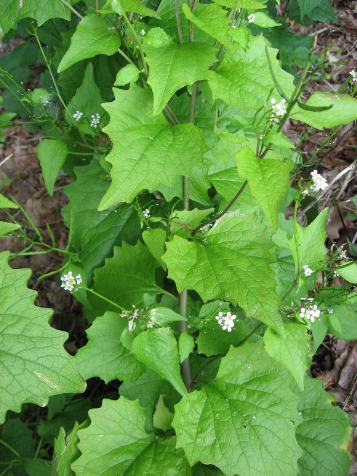
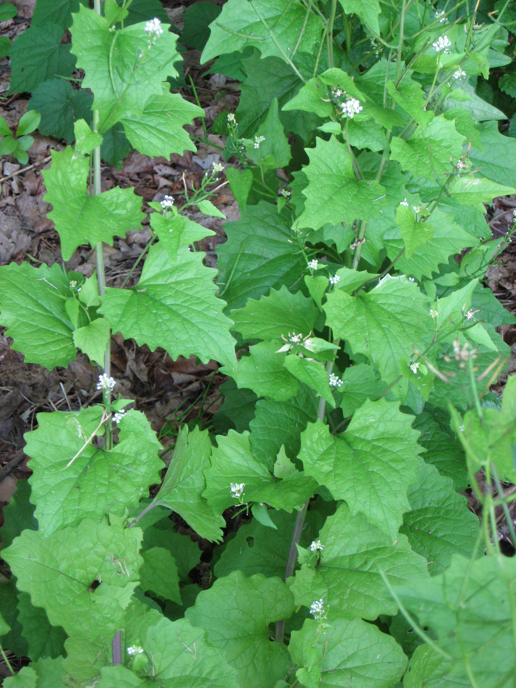
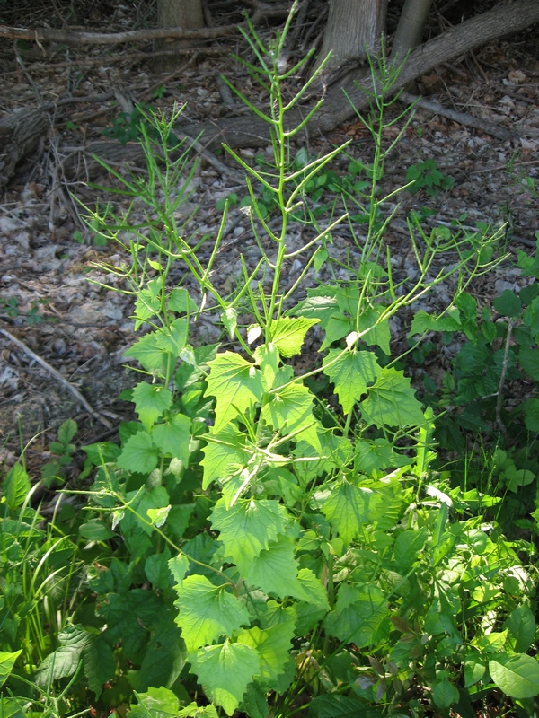

photo: Cleveland Metroparks
Garlic Mustard (Alliaria petiolata)
 Cleveland Metroparks |
Cleveland Metroparks |
Cleveland Metroparks |
Cleveland Metroparks |
 Cleveland Metroparks |
{kind=link}
{kind=link}
{kind=link}
Form:
Herbaceous biennial with stems 2'-4' tall. First year plants form a basal rosette that remains green through the winter. Second-year plants produce one to several flowering stems.
Leaves:
Basal leaves are dark green, heart-shaped, with large teeth. Stem leaves on flowering plants are alternate, triangular, with large teeth, and up to 2-3" across. Leaves and stems smell like garlic when crushed.
Flowers:
Small, white, 4-petaled, and abundant. Bloom throughout the spring.
Fruits and seeds:
Up to 3,000 seeds produced per plant. Seeds are small, dark brown to black, with ridged coats, and arranged in a single row inside long, slender capsules called siliques. Seeds remain viable in the soil for at least seven years.
Roots:
White, slender taproot, "S"-shaped at the top. Will resprout from the root crown if only top of the plant is removed.
Similar Species:
Sweet Cicely (Osmorhiza claytonii)
Early Saxifrage (Saxifraga virginica)
Tier 4 - Widespread and Abundant
These are known problem species throughout Cleveland Metroparks and are currently under active management. Management plans are set using population extent and site-specific information.
Action: These plants should be recored as present or absent. These species are known to be widespread and abundant throughout Cleveland Metroparks.